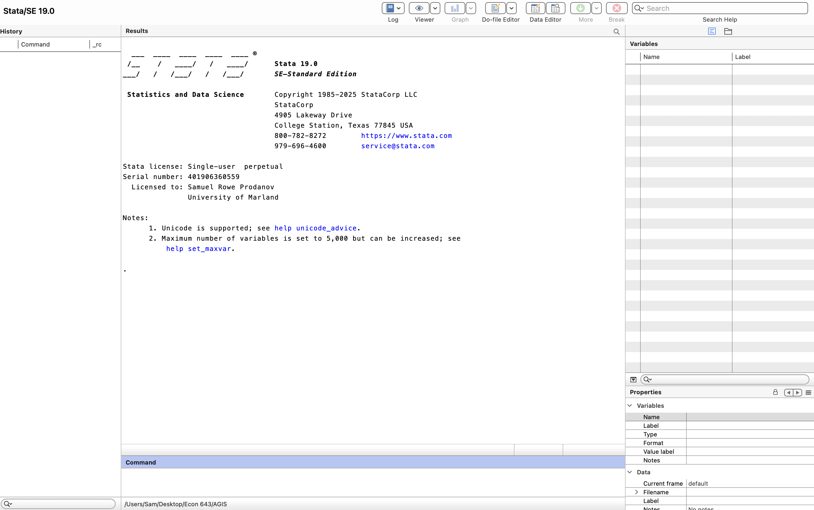
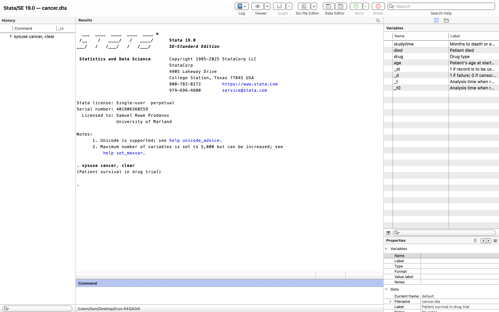
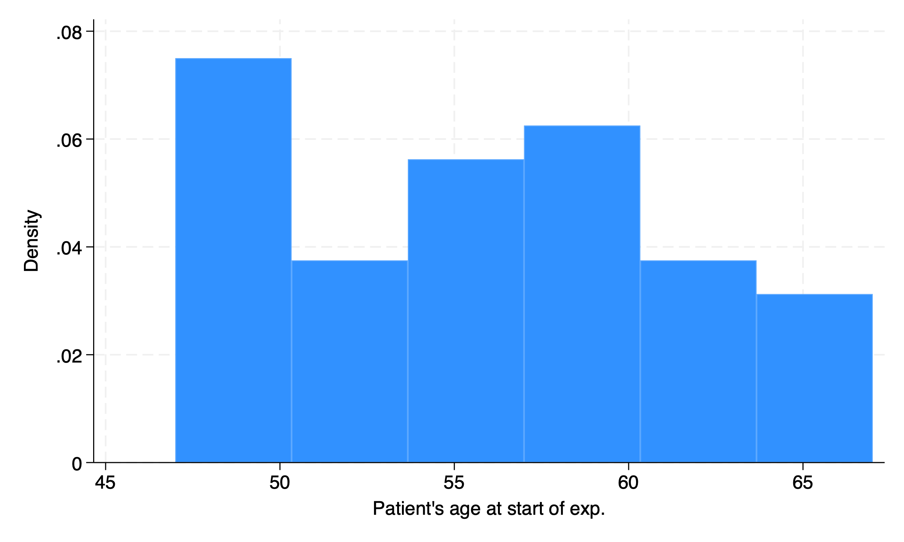
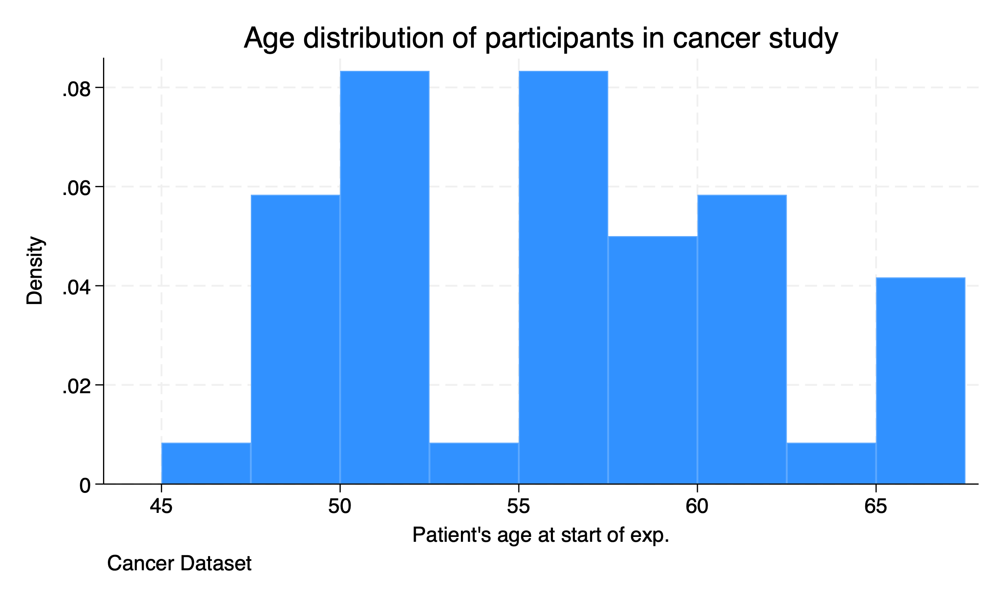

Chapter 1 Getting Started
1.1 Introduction to Stata
Stata is a type of statistical software package that can be utilized for data management, data analysis, and statistics. It is similar to other types of statistical software packages compared to R, SAS, or SPSS. It can create reports, regressions, and graphics that can be incorporated into our deliverables.
I have used all of these statistical software packages. While I am a big fan of R, especially with its flexibility, I find that Stata is great for econometric analysis. In my experience Stata stands out in a few ways.
- Stata is more powerful and flexible than SPSS (IMO)
- Stata’s syntax and processing is more streamlined/efficient than SAS (IMO)
- Stata is easier to use than R (IMO)
1.2 Get Supporting Material
Before we get started with the Introduction to Stata. I want to make sure everyone is able to download the data.
cd "/Users/Sam/Desktop/Econ 643/AGIS/"
net from https://www.stata-press.com/data/agis6r/
net get agis6rAfter we run these commands, we can check to see if the files installed on our local folder
total 19792
-rw-r--r-- 1 Sam staff 5784501 Aug 2 15:14 altrightcombined.dta
-rw-r--r-- 1 Sam staff 37639 Aug 2 15:14 attitude.dta
-rw-r--r-- 1 Sam staff 3715 Aug 2 15:14 c10interaction.dta
-rw-r--r-- 1 Sam staff 3131 Aug 2 15:14 c11barchart.dta
-rw-r--r-- 1 Sam staff 7650 Aug 2 15:14 census.dta
-rw-r--r-- 1 Sam staff 543 Aug 2 15:14 chapter1.do
-rw-r--r-- 1 Sam staff 4453 Aug 2 15:14 chapter10.do
-rw-r--r-- 1 Sam staff 2982 Aug 2 15:14 chapter11.do
-rw-r--r-- 1 Sam staff 3194 Aug 2 15:14 chapter12.do
-rw-r--r-- 1 Sam staff 1016 Aug 2 15:14 chapter13.do
-rw-r--r-- 1 Sam staff 92863 Aug 2 15:14 chapter14_missing.dta
-rw-r--r-- 1 Sam staff 1604 Aug 2 15:14 chapter14.do
-rw-r--r-- 1 Sam staff 3124 Aug 2 15:14 chapter15.do
-rw-r--r-- 1 Sam staff 786 Aug 2 15:14 chapter16.do
-rw-r--r-- 1 Sam staff 363 Aug 2 15:14 chapter2.do
-rw-r--r-- 1 Sam staff 2688 Aug 2 15:14 chapter3.do
-rw-r--r-- 1 Sam staff 578 Aug 2 15:14 chapter4.do
-rw-r--r-- 1 Sam staff 1411 Aug 2 15:14 chapter5.do
-rw-r--r-- 1 Sam staff 267702 Aug 2 15:14 chapter6_aspirin.dta
-rw-r--r-- 1 Sam staff 1096 Aug 2 15:14 chapter6.do
-rw-r--r-- 1 Sam staff 2772 Aug 2 15:14 chapter7.do
-rw-r--r-- 1 Sam staff 2272 Aug 2 15:14 chapter8.do
-rw-r--r-- 1 Sam staff 2854 Aug 2 15:14 chapter9.do
-rw-r--r-- 1 Sam staff 1845 Aug 2 15:14 chores.dta
-rw-r--r-- 1 Sam staff 65280 Aug 2 15:14 descriptive_gss.dta
-rw-r--r-- 1 Sam staff 1875 Aug 2 15:14 divorce.dta
-rw-r--r-- 1 Sam staff 1875 Aug 2 15:14 environ.dta
-rw-r--r-- 1 Sam staff 602 Aug 6 20:24 example_descriptive.tex
-rw-r--r-- 1 Sam staff 6682 Aug 2 15:14 firstsurvey_chapter4.dta
-rw-r--r-- 1 Sam staff 7720 Aug 2 15:14 firstsurvey.dta
-rw-r--r-- 1 Sam staff 17530 Aug 2 15:14 flourishing_bmi.dta
-rw-r--r-- 1 Sam staff 196040 Aug 2 15:14 gss2002_and_2006_chapter12.dta
-rw-r--r-- 1 Sam staff 71890 Aug 2 15:14 gss2002_chapter10.dta
-rw-r--r-- 1 Sam staff 70433 Aug 2 15:14 gss2002_chapter11.dta
-rw-r--r-- 1 Sam staff 54891 Aug 2 15:14 gss2002_chapter6.dta
-rw-r--r-- 1 Sam staff 36806 Aug 2 15:14 gss2002_chapter7.dta
-rw-r--r-- 1 Sam staff 48506 Aug 2 15:14 gss2002_chapter7b.dta
-rw-r--r-- 1 Sam staff 47388 Aug 2 15:14 gss2002_chapter8.dta
-rw-r--r-- 1 Sam staff 36438 Aug 2 15:14 gss2002_chapter9.dta
-rw-r--r-- 1 Sam staff 123729 Aug 2 15:14 gss2006_chapter12_selected.dta
-rw-r--r-- 1 Sam staff 254116 Aug 2 15:14 gss2006_chapter12.dta
-rw-r--r-- 1 Sam staff 19937 Aug 2 15:14 gss2006_chapter6_10percent.dta
-rw-r--r-- 1 Sam staff 84882 Aug 2 15:14 gss2006_chapter6.dta
-rw-r--r-- 1 Sam staff 11282 Aug 2 15:14 gss2006_chapter8_selected.dta
-rw-r--r-- 1 Sam staff 143277 Aug 2 15:14 gss2006_chapter8.dta
-rw-r--r-- 1 Sam staff 73780 Aug 2 15:14 gss2006_chapter9_2way.dta
-rw-r--r-- 1 Sam staff 63099 Aug 2 15:14 gss2006_chapter9.dta
-rw-r--r-- 1 Sam staff 64584 Aug 2 15:14 gss2016_chapter12.dta
-rw-r--r-- 1 Sam staff 4563 Aug 2 15:14 highjump.dta
-rw-r--r-- 1 Sam staff 1974 Aug 2 15:14 intraclass.dta
-rw-r--r-- 1 Sam staff 23745 Aug 2 15:14 irt_exercises.dta
-rw-r--r-- 1 Sam staff 2102 Aug 2 15:14 kappa1.dta
-rw-r--r-- 1 Sam staff 13444 Aug 2 15:14 kuder-richardson.dta
-rw-r--r-- 1 Sam staff 1915 Aug 2 15:14 long.dta
-rw-r--r-- 1 Sam staff 108658 Aug 2 15:14 longitudinal_exercise.dta
-rw-r--r-- 1 Sam staff 63905 Aug 2 15:14 longitudinal_mixed.dta
-rw-r--r-- 1 Sam staff 615085 Aug 2 15:14 nlsy97_chapter11.dta
-rw-r--r-- 1 Sam staff 58476 Aug 2 15:14 nlsy97_chapter7.dta
-rw-r--r-- 1 Sam staff 541933 Aug 2 15:14 nlsy97_selected_variables.dta
-rw-r--r-- 1 Sam staff 166013 Aug 2 15:14 ops2004.dta
-rw-r--r-- 1 Sam staff 4663 Aug 2 15:14 partyid.dta
-rw-r--r-- 1 Sam staff 7809 Aug 2 15:14 relate.cdb
-rw-r--r-- 1 Sam staff 225118 Aug 2 15:14 relate.dct
-rw-r--r-- 1 Sam staff 402891 Aug 2 15:14 relate.dta
-rw-r--r-- 1 Sam staff 1855 Aug 2 15:14 retest.dta
-rw-r--r-- 1 Sam staff 5955 Aug 2 15:14 severity.dta
-rw-r--r-- 1 Sam staff 3165 Aug 2 15:14 spearman.dta
-rw-r--r-- 1 Sam staff 1875 Aug 2 15:14 wide.dta
-rw-r--r-- 1 Sam staff 4529 Aug 2 15:14 wide9.dtaWe will be utilizing these data and do files throughout the course.
Also, I will be working with Stata 19, but it is okay if you are working with Stata 17 or Stata 18.
1.3 Stata Screen
For those who have never used Stata before. Let’s navigate the screen.

The output or results window is the middle of the screen and provides the largest section in Stata.
Below the output window is the command line window. Here you can enter ad hoc commands. I personally find these very helpful with data exploration using the tabulate or sum commands.
On the left-most side is the command history window. This will show prior commands that you have run through the command line. This is helpful if you need to copy something over to a do file or run a prior command.
In the upper right, we have the variable window. This window provides information about the variables in your dataset. Once you select a variable in the variable window, information about the variable appears in the lower-right window or variable property window.
Stata’s Toolbar provides helpful quick clicks for Stata’s Tools

The most important button is going to be the Do-File Editor button. This is where you do the majority of your work in Stata. The table with the magnifying glass is another important button for a quick click to the Browser window.
1.4 Our First Dataset
Please note that we will be working through the Do-File editor. We will not be using the point-and-click method
Let’s go ahead and use a dataset in memory. We will use the command sysuse with the option clear.

Now we have loaded a dataset into Stata, we can see that our windows have changed. Our results window says
. sysuse cancer, clear (Patient survival in drug trial)
Our Command History window shows are last command. Our variables in the memory are shown in the Variable window.
1.5 Run commands
1.5.1 describe
Next let’s run some commands to do some small analyses. Let’s look at the data with the describe command.
Contains data from /Applications/Stata/ado/base/c/cancer.dta
Observations: 48 Patient survival in drug trial
Variables: 8 3 Mar 2024 16:09
--------------------------------------------------------------------------------------------------
Variable Storage Display Value
name type format label Variable label
--------------------------------------------------------------------------------------------------
studytime byte %8.0g Months to death or end of exp.
died byte %8.0g diedlbl Patient died
drug byte %8.0g type Drug type
age byte %8.0g Patient's age at start of exp.
_st byte %8.0g 1 if record is to be used; 0 otherwise
_d byte %8.0g 1 if failure; 0 if censored
_t byte %10.0g Analysis time when record ends
_t0 byte %10.0g Analysis time when record begins
--------------------------------------------------------------------------------------------------
Sorted by: The describe command gives us an overview of the dataset. It provides the variable name, storage type, display format, value label, and variable label. We can see that all of our data are numeric and have variable labels to describe the variable, but only two variables have labels for the values.
1.5.2 summarize
Next, we can run basic descriptive statistics for all of our variables with the summarize or sum command.
Variable | Obs Mean Std. dev. Min Max
-------------+---------------------------------------------------------
studytime | 48 15.5 10.25629 1 39
died | 48 .6458333 .4833211 0 1
drug | 48 1.875 .8410986 1 3
age | 48 55.875 5.659205 47 67
_st | 48 1 0 1 1
-------------+---------------------------------------------------------
_d | 48 .6458333 .4833211 0 1
_t | 48 15.5 10.25629 1 39
_t0 | 48 0 0 0 0Our basic descriptive statistics show that the average age is 55.9 years old with a standard deviation of 5.7. Our maximum age is 67 and the minimum age is 47.
1.5.3 histogram
Next we can graph the distribution of our age variable. AGIS shows how to create a histogram with the point and click, but we are going straight to syntax. No point in delaying the inevitable.
(bin=6, start=47, width=3.3333333)
We can format the histogram with options. We can edit the bins and the width of the histogram with the bin() option or width() options. Options are established after the , in a command. We will also start at age 45 with the start option and increment by 2.5 with width(2.5. We can also edit the title with the title() option and cite the source of the data with the caption() option.
histogram age, title("Age distribution of participants in cancer study") caption("Cancer Dataset") width(2.5) start(45)(bin=6, start=47, width=3.3333333)
We can see the number of bins has increased and the width of the bins is 2.5 years. We have also added a title and a source of the data.
1.6 Help and Search
Before we get started, I wanted to talk about two helpful commands.
The help command displays help information about the specified command or topic, while the search command search Stata documentation and other resources. These can be utilized to gather additional information about commands or topics.